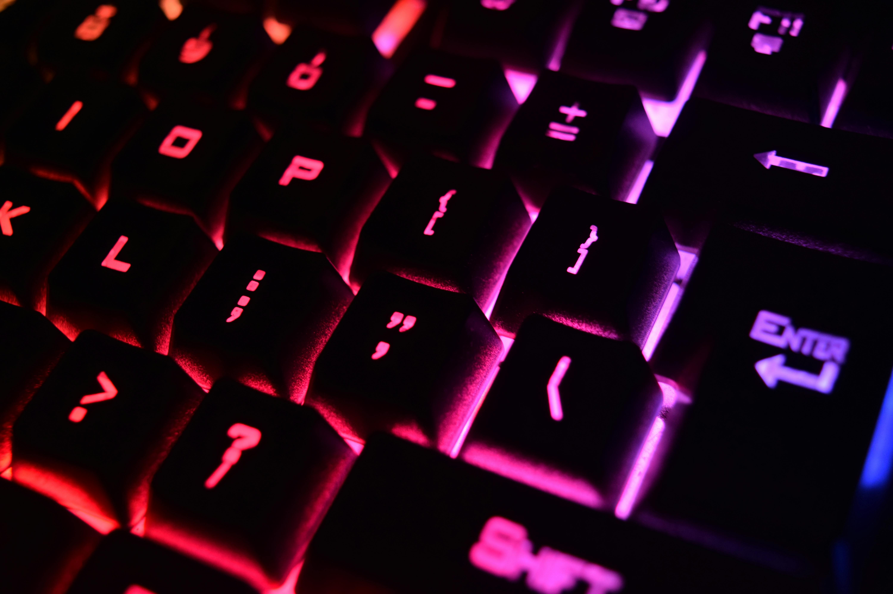

Somos uma loja do ramo de periféricos gamers a mais de 100 anos no mercado com produtos de renome mundial, ao comprar o nosso produto o nosso cliente sabe que pode confiar em sua durabilidade e jogabilidade na hora de se divertir ou mesmo trabalhar.
Nossa História começou em meados de 1990 quando nosso ante então fundador decidiu se aventurar em um mercado ainda em desenvolvimento, seu espirito desbravador e perseverança fez de nossa marca o que é hoje, ele foi um grande lider e um exemplo a ser seguido mesmo nos tempos de hoje.
Produtos
Teclado Mecanico Modelo US Branco
detalhes: Modelo com 104 teclas, Hot-swappable Kailh MX, blue-swich
Teclado Mecanico Modelo US Branco
detalhes: Modelo com 104 teclas, Hot-swappable Kailh MX, white-swich

Teclado Mecanico Modelo US Preto
detalhes: Modelo com 104 teclas, Hot-swappable Kailh MX, red-swich
Teclado Mecanico Modelo US Branco
detalhes: Modelo com 94 teclas, Kailh MX, blue-swich